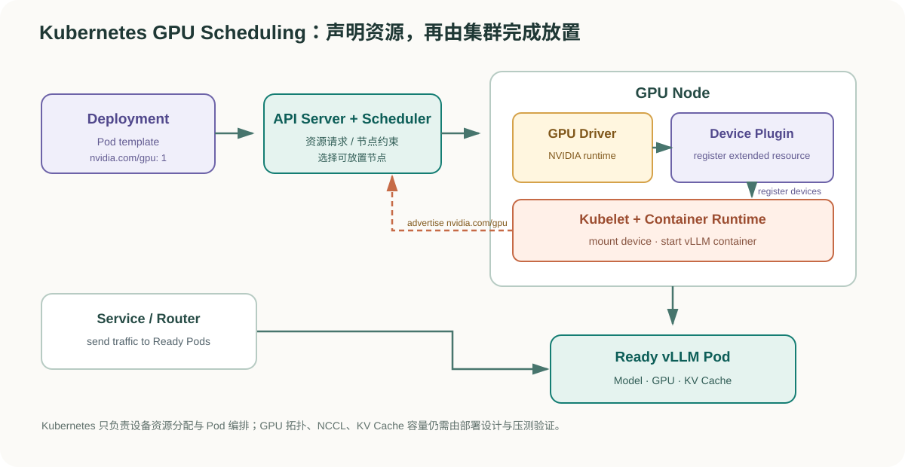

第 16 章 · 生产部署、观测与可靠性
Kubernetes GPU Serving：让集群调度模型服务
Kubernetes 不会自动理解模型显存、KV Cache 或张量并行。它负责 Pod 编排与资源调度；GPU Device Plugin 把设备暴露为可分配资源；vLLM 在容器内部管理模型推理。把这些层次接好，才形成可运维的 GPU 服务。
在 Kubernetes 中，调度器首先要决定“哪个节点有足够的 CPU、内存和 GPU 资源，可以放置这个 Pod”。它不会自动判断“这张 GPU 是否有足够 KV Cache 容量”或“这个模型的 TP 通信拓扑是否理想”。因此，GPU 资源声明、节点标签、驱动和设备插件、模型启动参数与服务探针必须协同设计。
读完这一章，你应该能够
- 解释 NVIDIA Device Plugin 如何向 Kubernetes 注册 GPU 资源。
- 写出包含 GPU limit、模型 Secret、启动探针和就绪探针的 Deployment 骨架。
- 区分 Deployment RollingUpdate 与 PodDisruptionBudget 的职责。
- 理解 vLLM Production Stack 的 Helm、CRD 与 Gateway API Inference Extension 入口。
- 评估 Prefix-aware 与 Load-aware routing 对 KV Cache 和负载分布的影响。

16.1 Kubernetes 中的推理服务拓扑
典型拓扑可以分成：
- Ingress / Gateway：入口 TLS、身份认证、请求限制和 API 路由。
- Router / Service：发现可用后端，选择模型副本，按负载或缓存亲和性分发请求。
- vLLM Deployment：一个或多个推理副本，每个 Pod 绑定它所需的 GPU 资源与模型配置。
- Model storage / cache：模型权重、Tokenizer、Hugging Face 缓存和编译缓存的持久化或预热方案。
- Observability：Prometheus、Grafana、日志与 Tracing，关联 Pod 状态、请求延迟和 GPU 资源。
一个 Service 只解决网络发现与负载转发，不理解模型缓存亲和性；如果需要 prefix-aware routing 或 KV Cache aware routing，需要额外 Router 或 Production Stack 组件。
16.2 GPU 如何成为可调度资源
Kubernetes 通过 Device Plugin 管理 GPU 等专用设备。管理员需要先在节点安装 GPU 驱动，再部署对应厂商的 Device Plugin。插件向 kubelet 注册可分配资源，例如 NVIDIA 环境中的 nvidia.com/gpu。
Pod 可以像申请 CPU 和内存一样申请扩展资源，但 GPU 有专门规则：
- GPU 通常写在
resources.limits中；可以只写 limit，Kubernetes 会把它作为 request。 - 如果同时写 GPU requests 和 limits，两者必须相等。
- 不能只写 GPU request 而不写 limit。
- MIG、时间切片或第三方 GPU 共享方案可能暴露不同资源名和语义，不能把它们当作普通整卡资源处理。
多 GPU vLLM Pod 还需要考虑节点拓扑、GPU 互联、NCCL、网络与执行器配置。TP=2 不意味着任意两张 GPU 组合都能获得相同通信性能；多节点并行还需要额外的分布式网络与故障配置。
16.3 一个 Pod 的部署骨架
下面是一个教学骨架，展示 GPU 资源、Secret、模型缓存卷与探针如何组合。镜像版本、PVC、GPU 资源名、模型 revision 和资源请求都应替换为实际集群中已验证的值。
apiVersion: apps/v1
kind: Deployment
metadata:
name: vllm-qwen
spec:
replicas: 1
selector:
matchLabels:
app: vllm-qwen
template:
metadata:
labels:
app: vllm-qwen
spec:
terminationGracePeriodSeconds: 180
containers:
- name: vllm
image: vllm/vllm-openai:<tested-release-tag>
args:
- --model
- Qwen/Qwen3-0.6B
- --host
- 0.0.0.0
- --port
- "8000"
ports:
- name: http
containerPort: 8000
env:
- name: HF_TOKEN
valueFrom:
secretKeyRef:
name: hf-token
key: token
resources:
requests:
cpu: "6"
memory: 16Gi
limits:
cpu: "8"
memory: 32Gi
nvidia.com/gpu: "1"
startupProbe:
httpGet:
path: /health
port: http
periodSeconds: 10
failureThreshold: 90
readinessProbe:
httpGet:
path: /health
port: http
periodSeconds: 5
failureThreshold: 3
livenessProbe:
tcpSocket:
port: http
periodSeconds: 10
failureThreshold: 6
volumeMounts:
- name: model-cache
mountPath: /root/.cache/huggingface
volumes:
- name: model-cache
persistentVolumeClaim:
claimName: hf-model-cache关于探针：示例使用 /health 作为启动与就绪检查，TCP 探针仅作为轻量存活信号示意。真实部署需要验证所用 vLLM 版本的 endpoint 行为、模型加载时长和失败模式；探针阈值不能照抄。容器镜像以 root 运行时可使用 root 路径；若采用官方支持的 non-root 方式，需要同步修改挂载目录和安全上下文。
关于 GPU limit：这里的 nvidia.com/gpu 依赖节点已经安装 NVIDIA 驱动与 Device Plugin。若集群使用 MIG 或 GPU 共享插件，资源名称与申请方式要以集群管理员提供的资源清单为准。
关于优雅终止：示例中的 terminationGracePeriodSeconds: 180 只是占位演示，应根据最大请求时长、流式响应 drain 策略和实际 shutdown 行为测试后设定；不要假设它能自动保证所有 in-flight 请求都完成。
16.4 探针、滚动更新与 PDB
三个探针回答不同问题：Startup 允许模型有足够的加载时间；Readiness 决定 Pod 是否接收 Service 流量；Liveness 判断容器是否需要重启。把“GPU 正在忙”误当成“进程已经死锁”，可能引发重启风暴。
Deployment 的 RollingUpdate 使用 maxUnavailable 和 maxSurge 控制更新过程中的不可用 Pod 数量和额外 Pod 数量：
strategy:
type: RollingUpdate
rollingUpdate:
maxUnavailable: 0
maxSurge: 1上面的设置希望在新 Pod Ready 后再减少旧 Pod，但它要求集群有额外 GPU 资源容纳新副本。若 GPU 已全部分配，surge Pod 可能长期 Pending；在没有额外容量时，需要选择分批维护、临时扩容或接受受控的服务容量下降。
PodDisruptionBudget 用于限制节点 drain 等自愿中断期间同时不可用的副本数量。它不能阻止节点硬故障，也不是 Deployment RollingUpdate 的替代品；滚动升级的可用性由 Deployment strategy 控制。
16.5 vLLM Production Stack 的三种入口
vLLM Production Stack 是 vLLM 项目下的参考生产部署栈，提供推理引擎编排、请求路由和观测集成。当前官方文档列出三种主要部署入口：
| 入口 | 适用场景 | 需要理解的边界 |
|---|---|---|
| Helm Chart | 标准 Kubernetes 部署与参数化配置 | Values 与 Chart 版本需要固定并审查 |
| CRD Deployment | 更偏 Kubernetes 原生资源和 Operator 工作流 | CRD 版本、Controller 和升级路径需要管理 |
| Gateway API Inference Extension | 通过 Gateway API 与 Router 管理模型服务池 | 涉及 Gateway、Inference Extension 与 Router 组件的兼容性 |
标准 Helm Chart 的基本安装流程如下，正式环境还需要按目标版本固定 Chart、values 文件和镜像：
helm repo add vllm https://vllm-project.github.io/production-stack
helm repo update
helm install vllm vllm/vllm-stack \
-f values.yamlProduction Stack 的能力还包括多模型部署、模型感知 / 前缀感知路由，以及通过 LMCache 等组件扩展 KV Cache offloading。它是一个可选的参考栈，不是 Kubernetes 部署 vLLM 的唯一方式。
16.6 路由、扩缩容与缓存局部性
多副本系统面临两个相互拉扯的目标：
- 缓存命中：相同前缀尽量到达持有对应 KV Cache 的实例。
- 负载均衡：避免所有热门前缀都挤在同一个实例，造成队列积压。
Production Stack 的 Load-aware Routing 给出一种示例评分形式：
score(i) = matched_tokens(i) / prompt_tokens − β × relative_load(i)其中缓存匹配比例代表潜在复用收益，relative_load 表示当前实例相对负载，β 控制负载与缓存收益之间的权衡。这个公式是该 Router 的具体实现策略，不是所有 vLLM 部署的通用路由标准。
扩缩容时也不要只看 GPU utilization。可结合等待队列、TTFT、请求速率、KV Cache 使用情况和副本冷启动时间；新副本需要分配 GPU、拉取模型、加载权重和预热，扩容动作本身有延迟。若请求很快消失，盲目扩缩容还可能产生抖动。
本章自检
- 为什么 Kubernetes Scheduler 需要 Device Plugin 才能调度 NVIDIA GPU？
- GPU request 与 limit 为什么必须满足特殊规则？
- 为什么模型加载时间应该由 Startup Probe 考虑，而不是简单缩短 Liveness 周期？
- PDB 与 Deployment RollingUpdate 各自控制什么？
- 为什么 Prefix-aware routing 可能让单个热门实例过载？
下一章进入可观测性：把用户感受到的延迟拆成队列、Prefill、Decode 与网络事件，并用指标和 Trace 定位瓶颈。
参考资料与源码入口
- Kubernetes：Schedule GPUs、Container Probes、Deployments、Pod Disruptions / PDB。
- vLLM：Production Stack。
- vLLM Production Stack：Deployment Overview、Prefix Aware Routing、Load Aware Routing。
本章 YAML 是教学骨架，不是适用于任意 GPU 节点、vLLM 镜像和 StorageClass 的开箱即用 Chart。部署前应使用目标集群验证 Pod 安全上下文、驱动、设备插件、探针和存储访问模式。